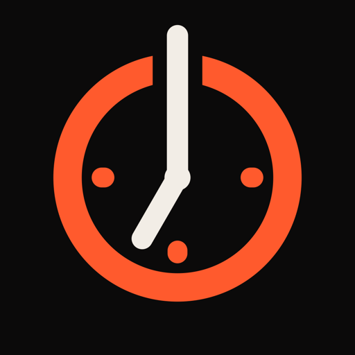
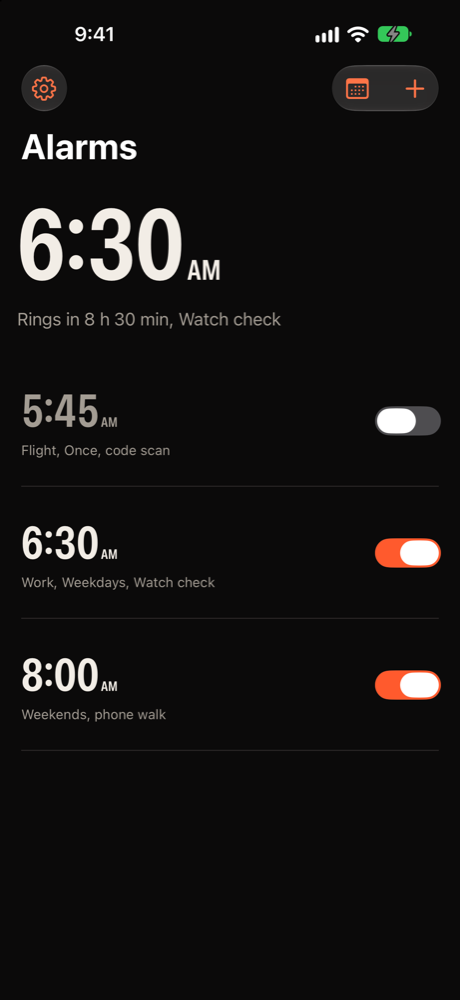
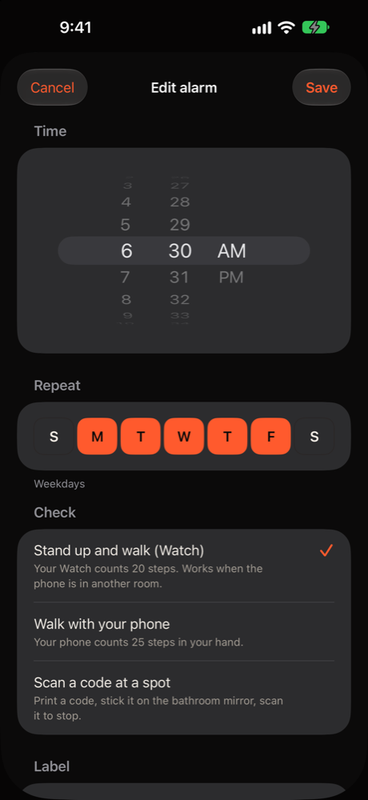
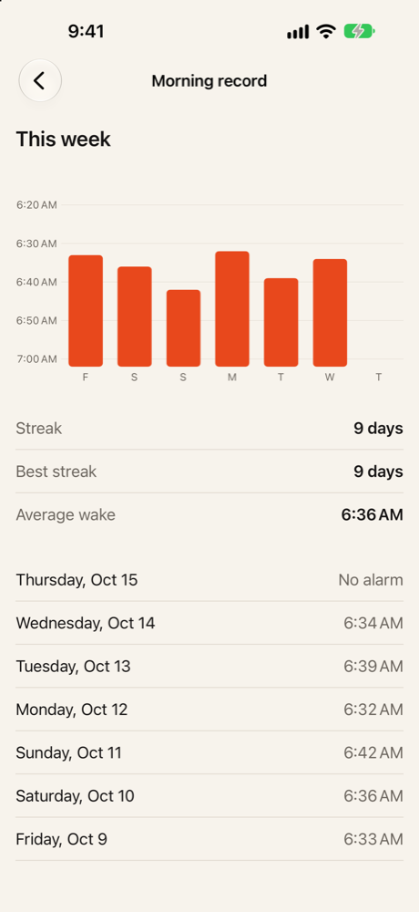
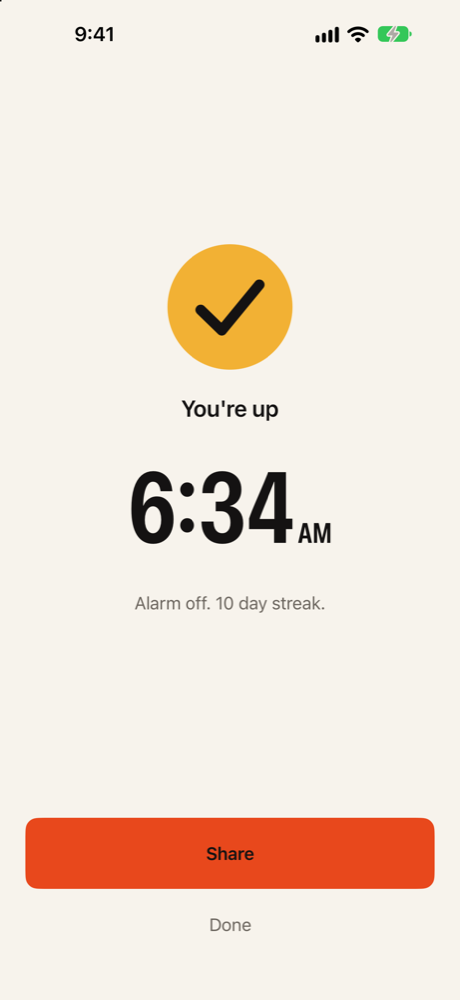

Alarm Clock: Actually Up
Only stops when you stand up · App Store · updated 17 October 2026
What is new
Version 1.0 is in review as of 17 October 2026. This page covers the weekday routine: one alarm repeating Monday to Friday, labelled Work, checked by 20 steps on the Apple Watch, and the Morning record that shows a week of wake times, the streak, the best streak and the average wake time.
Facts
- Version
- 1.0 (build 2026101502), built with Xcode 27.1
- Platforms
- iPhone, Apple Watch (iPhone Duo layouts on the 27.1 SDK)
- Languages
- 20: Arabic, Chinese (Simplified and Traditional), Dutch, English (US, UK, AU, CA), French, German, Hindi, Indonesian, Italian, Japanese, Korean, Portuguese (Brazil), Russian, Spanish (Spain, Mexico), Turkish
- Price
- Free, no in-app purchases
- Privacy
- No account, no analytics, no ads. Alarms and wake records stay on the device. App Privacy: Data Not Collected.
- Accessibility
- VoiceOver labels on controls and charts; Reduce Motion is respected; haptics on state changes.
- Window
- 26 December 2026 to 10 January 2027
- Developer
- One developer in Dubai
Screens
Simulator captures of the screens described in the nomination, on sample data (a sample week of wake times, not a real person's record). No marketing frames.




Why now
- Federal Holidays: New Year's Day 2027 is Friday, 1 January, so the first Monday back is 4 January U.S. Office of Personnel Management, read 17 Oct 2026
- About Sleep lists "Going to bed and getting up at the same time every day" among habits that can improve sleep Centers for Disease Control and Prevention, 15 May 2024, cdc.gov/sleep/about